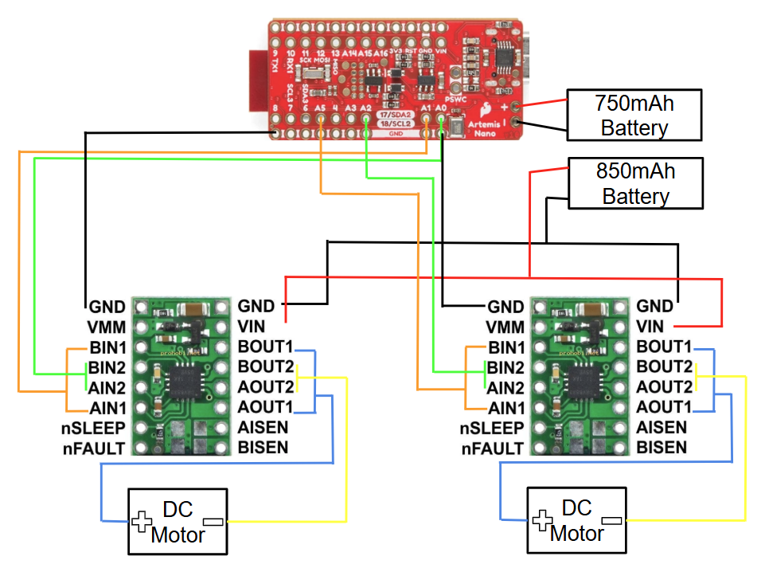
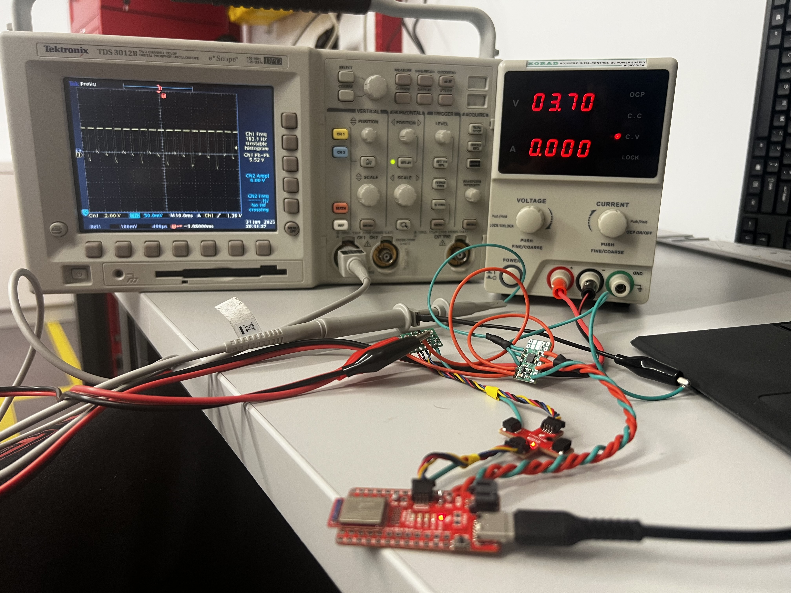
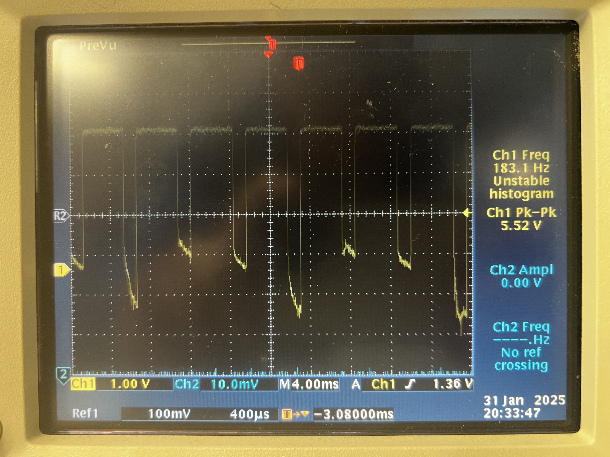
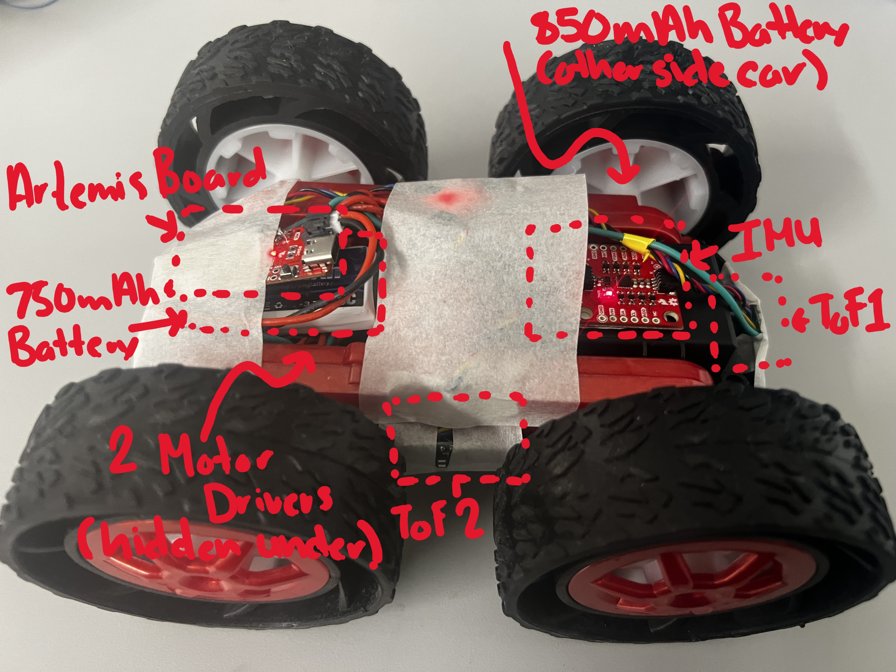

Lab 4: Motor Drivers + PWM Calibration
This lab focuses on wiring and testing a dual H-bridge motor driver with the Artemis, verifying PWM output
with an oscilloscope, measuring start vs keep-running PWM thresholds, and documenting open-loop driving.
I also discuss the PWM frequency created by analogWrite() and when higher PWM frequencies might help.
1. Prelab
Wiring Diagram: Motor Driver, Artemis & Battery)
Down below is my completed wiring diagram showing how I connected the dual H-bridge motor driver to the Artemis, the battery and the motors.

Artemis Control Pins
The pins I will use for motor control on the Artemis are:
- Left motor: A0 and A1
- Right motor: A2 and A5
I chose these pins because they support PWM (pulse width modulation), which lets me change the duty cycle and control motor speed.
Battery Discussion
We power the Artemis and the motor drivers/motors from separate batteries for two main reasons:
- Power limitations: the battery we have is about 3.7 V, which is not ideal to run all electronics together, especially when motors draw current and cause voltage droop.
- Noise isolation: motors and drivers introduce switching noise and current spikes. If the Artemis shares the same supply, sensitive measurement electronics can show more noise and errors. Separate supplies improve reliability.
2. Lab Tasks
PWM Setup Photo: Power Supply & Oscilloscope
Below is a photo of my set up showing the one soldered motor driver hooked up to a power supply of 3.7 V and a oscilloscope to identify the PWM signal.

Power Supply Settings Discussion
A reasonable motor supply setting is 3.7 V, which matches the battery voltage we were given. The dual H-bridge motor driver supports a motor supply voltage range of 2.7 V to 10.8 V, so other values in that range can work as long as they stay within safe operating limits for the system.
Oscilloscope PWM Capture
Using this code I was able to capture the behavior of the PWM signal on the oscilloscope.

Below is the code snippet used to test the motor drivers using PWM output from analogWrite().
Code Snippet (Motor Driver PWM Test)
#define PWM_0 A0
#define PWM_1 A1
void setup() {
pinMode(PWM_0, OUTPUT);
pinMode(PWM_1, OUTPUT);
}
void loop(){
for (int i = 0; i < 255; i++) {
analogWrite(0,255-i)
analogWrite(1,0);
delay(10);
}
}analogWrite() Motor Test Code
Below is the code snippet used to test the motors on the robotusing PWM output from analogWrite().
Code Snippet (Motor Driver PWM Test)
#define PWM_0 A0 // backward motor 1
#define PWM_1 A1 // forward motor 1
#define PWM_2 A2 // forward motor 2
#define PWM_5 A5 // backward motor 2
void setup() {
pinMode(PWM_0, OUTPUT); pinMode(PWM_1, OUTPUT);
pinMode(PWM_2, OUTPUT); pinMode(PWM_5, OUTPUT);
}
void loop() {
drive_forward(65, 3000); stop_motors(1000);
drive_backward(65, 3000); stop_motors(3000);
}
void drive_forward(int duty1, int sec) {
float cali = 1.23; int duty2 = (int)(duty1 * cali);
analogWrite(PWM_0, 0); analogWrite(PWM_1, duty1); // Drive left motor clockwise:
analogWrite(PWM_2, duty2); analogWrite(PWM_5, 0); // Drive right motor clockwise:
delay(sec);
}
void drive_backward(int duty1, int sec) {
float cali = 1.23; int duty2 = (int)(duty1 * cali);
analogWrite(PWM_0, duty1); analogWrite(PWM_1, 0); // Drive left motor counter clockwise:
analogWrite(PWM_2, 0); analogWrite(PWM_5, duty2); // Drive right motor counter clockwise:
delay(sec);
}
void stop_motors(int sec) {
analogWrite(PWM_0, 0); analogWrite(PWM_1, 0);
analogWrite(PWM_2, 0); analogWrite(PWM_5, 0);
delay(sec);
}
Videos
- Short video of one wheel spinning.
- Short video of both wheels spinning with the battery driving the motor drivers.
Single Motor
Both Motors
Robot Assembly Photo
Here is a picture of all the components assembled on to the inside of the robot.

3. Lower Limit PWM Values + Calibration
Lower Limit PWM Values (Start Moving)
I determined the lowest PWM values where the robot could reliably start moving forward and perform on-axis turns.
Start-Motion Results
- Forward (minimum to start): Left motor PWM ≈ 60. Using a calibration constant of 1.23, the right motor PWM was ≈ 80.
- Turning (minimum to start): Turn left ≈ 150, turn right ≈ 150.
How I Found These Values
I started at a PWM where the wheels ran under the robot’s own weight, then decreased the PWM until the robot barely moved. I then went one step further to find where the motors could not overcome initial torque (static friction).
Calibration Demonstration
I have video of the robot moving straight along a table. The calibration code is incorporated in the code snippet above.
Calibration Discussion
One difficulty was that one wheel had a larger initial torque to overcome than the other. This made it hard to keep the robot moving straight at low PWM because one wheel could lag or briefly stop while the other kept moving. My solution was to increase the PWM signal and to recharge the batteryso the weaker motor could more consistently overcome static friction and have the extra power to back it up.
Robot moving in straight-line after calibration.
Robot making on-axis turn after calibration.
Robot making on-axis turn after calibration.
4. PWM Frequency + Keep-Running PWM
analogWrite() PWM Frequency
The PWM frequency produced by analogWrite() is set by the microcontroller timers and is typically in the
hundreds of Hz to around ~1 kHz range (depending on the pin/timer). For small DC motors driven through an H-bridge,
this is generally fast enough because the motor’s mechanical inertia averages the PWM pulses into a smooth speed response.
Would Faster PWM Help?
Manually configuring timers to generate a faster PWM signal (often above ~20 kHz) could provide benefits such as:
- Less audible whining (PWM above human hearing)
- Smoother low-speed motion (reduced torque ripple)
- Potentially cleaner sensor readings (less low-frequency switching noise coupling into measurements)
A tradeoff is that changing timers can conflict with other libraries/timing features, depending on the platform and pin mapping.
Start PWM vs Keep-Running PWM (Experimental Method)
I tested both: (1) the minimum PWM needed to start motion (static friction), and (2) the minimum PWM needed to keep the robot moving after it is already rolling (kinetic friction).
Procedure
- Command a PWM value that reliably starts motion (a short “kick”).
- After motion begins, drop to a lower PWM value.
- Decrease the keep-running PWM until the robot stalls, then record the lowest stable value.
- Repeat for forward motion and on-axis turns.
Results Table (Fill In)
The table below separates the PWM needed to start motion vs the PWM needed to keep motion. This also captures how quickly the robot settles into its slowest stable speed.
| Motion | PWM Start (Kick) | Kick Duration (ms) | Lowest PWM Keep-Running | Settling Time to Slowest Speed (s) |
|---|---|---|---|---|
| Forward | __ | __ | __ | __ |
| Turn Left | __ | __ | __ | __ |
| Turn Right | __ | __ | __ | __ |
In general, the keep-running PWM should be lower than the start PWM because once the wheels are moving, the motors mainly need to overcome kinetic friction instead of static friction.
5. Open Loop Code and Video
Below is my open-loop driving code and a video demonstrating.
Open Loop Code (Placeholder)
#define PWM_0 A0 // backward motor 1
#define PWM_1 A1 // forward motor 1
#define PWM_2 A2 // forward motor 2
#define PWM_5 A5 // backward motor 2
void setup() {
pinMode(PWM_0, OUTPUT); pinMode(PWM_1, OUTPUT);
pinMode(PWM_2, OUTPUT); pinMode(PWM_5, OUTPUT);
}
void loop() {
drive_forward(65, 3000); stop_motors(1000);
drive_backward(65, 3000); stop_motors(3000);
turn_right(65, 3000); stop_motors(3000);
turn_left(65, 3000); stop_motors(3000);
}
void drive_forward(int duty1, int sec) {
float cali = 1.23; int duty2 = (int)(duty1 * cali);
analogWrite(PWM_0, 0); analogWrite(PWM_1, duty1); // Drive left motor clockwise:
analogWrite(PWM_2, duty2); analogWrite(PWM_5, 0); // Drive right motor clockwise:
delay(sec);
}
void drive_backward(int duty1, int sec) {
float cali = 1.23; int duty2 = (int)(duty1 * cali);
analogWrite(PWM_0, duty1); analogWrite(PWM_1, 0); // Drive left motor counter clockwise:
analogWrite(PWM_2, 0); analogWrite(PWM_5, duty2); // Drive right motor counter clockwise:
delay(sec);
}
void turn_right(int duty1, int sec) {
float cali = 1.23; int duty2 = (int)(duty1 * cali);
analogWrite(PWM_0, duty1); analogWrite(PWM_1, 0); // Left motor backward
analogWrite(PWM_2, duty2); analogWrite(PWM_5, 0); //right motor forward
delay(sec);
}
void turn_left(int duty1, int sec) {
float cali = 1.23; int duty2 = (int)(duty1 * cali);
analogWrite(PWM_0, 0); analogWrite(PWM_1, duty1); // Left motor forward
analogWrite(PWM_2, 0); analogWrite(PWM_5, duty2); //right motor backward
delay(sec);
}
void stop_motors(int sec) {
analogWrite(PWM_0, 0); analogWrite(PWM_1, 0);
analogWrite(PWM_2, 0); analogWrite(PWM_5, 0);
delay(sec);
}Open Loop Video (Placeholder)
6. Resources
Datasheet (Dual H-Bridge)
Used for verifying acceptable motor supply voltage range and driver behavior.
Oscilloscope
Used to verify PWM duty cycle and observe PWM waveform characteristics.
ChatGPT
Helped format the write-up into the same webpage structure and styling as my Lab 3 page.